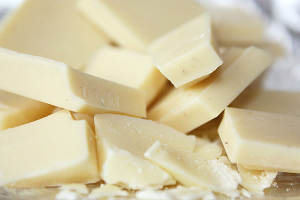
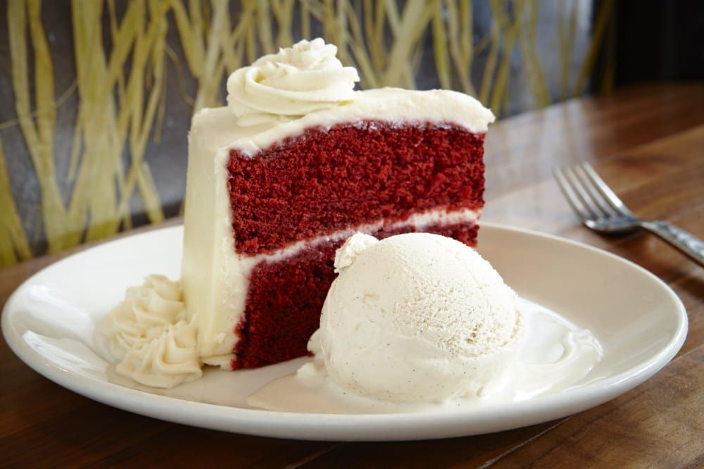
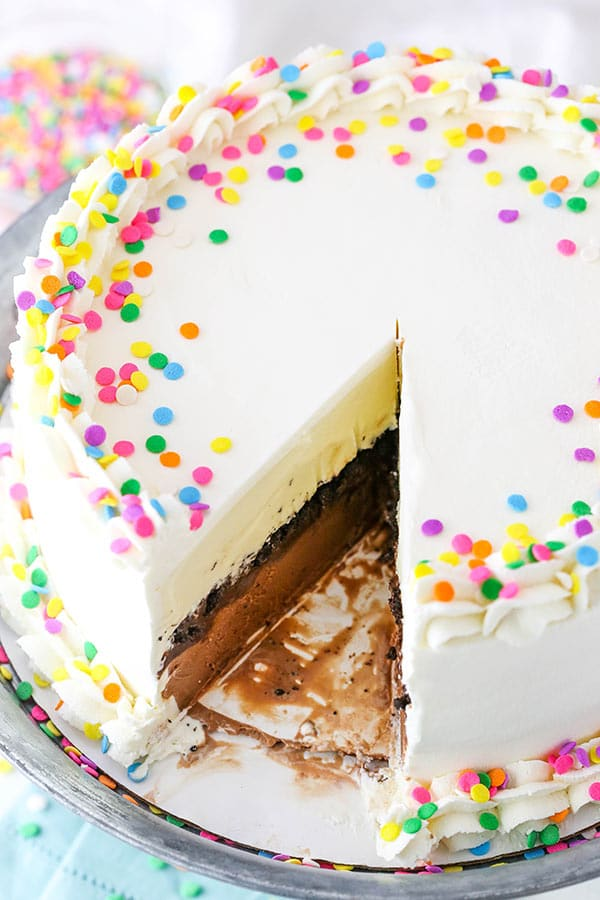
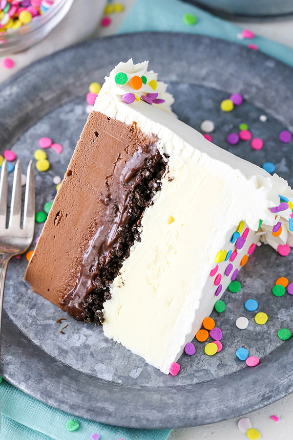

White Chocolate Ice Cream Recipe

Ingredients:
4 egg yolks
1/2 pint (250ml) fresh milk
1/2 pint (250ml) double/heavy cream
3 oz (75g) caster sugar
2 teaspoons vanilla extract (or according to taste)
9oz (250g) white chocolate
1- carefully chop the white chocolate into small pieces and put to one side in 2 separate but equal portions.
2- make the custard base - pour the milk into a saucepan and bring the pan slowly up to boiling point.
3- In a bowl, beat and mix together the egg yolks and sugar until thick.
4- Pour the hot (but not boiled) milk into the mixture of egg yolks and sugar whilst stirring
5- Pour the mixture back into the pan and heat gently, stirring until the custard thickens
- DO NOT BRING TO THE BOIL OR IT WILL PROBABLY CURDLE.
When you can see a film form over the back of your spoon it's time to remove the saucepan from the heat.
Stir in the vanilla extract and 1 portion of the chopped chocolate pieces.
6- Keep stirring until all the chocolate has melted. Leave to cool. When fully cooled, stir in the cream.
7- Transfer the whole mixture into an ice cream maker and freeze according to the manufacturer's instructions.
About 5 minutes before the end of the freezing cycle add the remaining chocolate pieces.
Red Velvet Cake Ice Cream Recipe

Step 1 - Make a rich custard base using:
1/2 pint (250ml) chilled whole milk
4 egg yolks
4 oz (100g) sugar or caster sugar
1- Heat the milk slowly in a saucepan. Bring it up to boiling point but do not boil..
2- In a separate bowl, mix the egg yolks with the sugar.
Beat until smooth then pour the hot milk into it and stir it well.
Pour the mixture into the saucepan and heat it gently.
3- Keep stirring whilst it slowly heats up and thickens.
When it looks and feels like custard take the pan off the heat and leave it to cool down.
This will take 1-2 hours. Chill in the refrigerator for 2-3 hours or overnight.
Step 2 - When the custard is chilled, add the remaining ingredients:
1/2 pint (250ml) chilled, double/heavy cream
8 oz (200g) Red Velvet cake (crumbled and chilled)
1- Stir the double/heavy cream into the chilled custard base.
2- Add the crumbled Red Velvet cake, gently stirring it in well.
3- Transfer the mixture into your ice cream maker and freeze according to the manufacturer's instructions.
HOW TO STORE AN ICE CREAM CAKE
You can layer everything together, cover it and leave it in the pan you built it in.
It should be fine sitting in the pan for about a week ahead of time.
Then you can frost it the of or the day before you need it so that the decorations looks nice and fresh.
After decorating, it’s ideal to store it in a container (such as a cake box or cake carrier) in the freezer.
If you don’t have a container that size or space in your freezer, it’ll be fine for a few days in your freezer.

